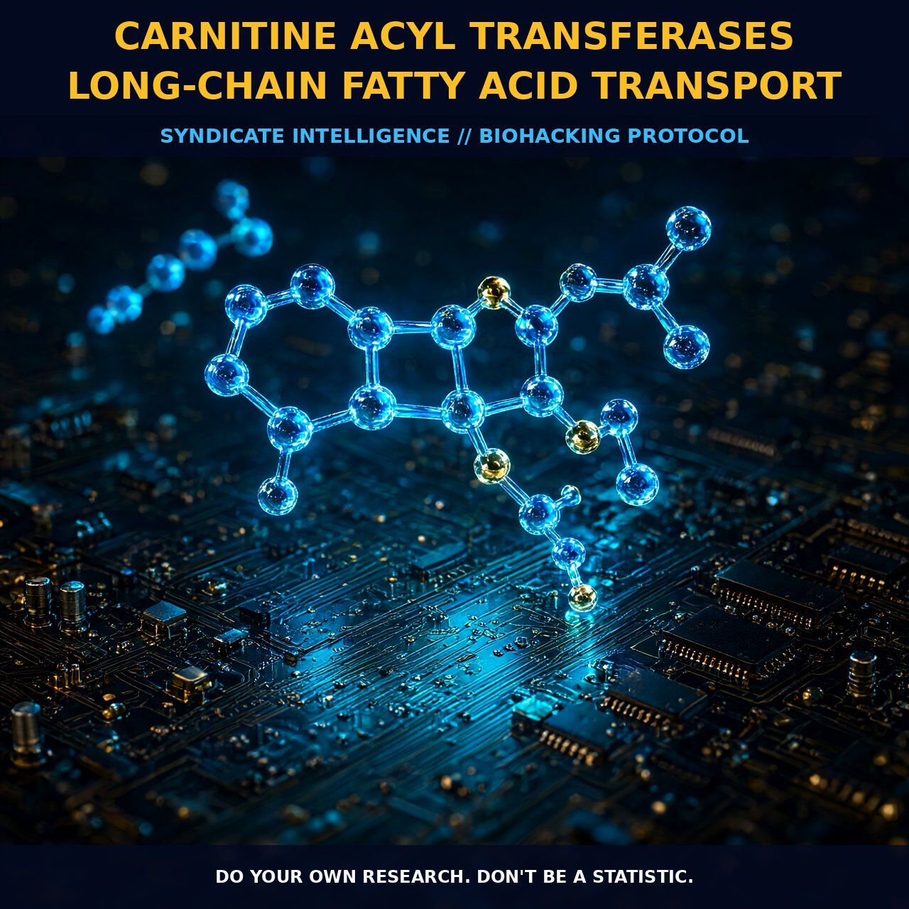

Optimizing Fatty Acid Oxidation with Carnitine Acyl Transferases

The Mechanism
Carnitine acyl transferases are integral to the beta-oxidation of long-chain fatty acids in the mitochondria. The process initiates with the conversion of acyl-coenzyme A esters to acyl-carnitine esters by carnitine palmitoyltransferase-1 (CPT1), located on the outer mitochondrial membrane. This enzyme facilitates the entry of long-chain fatty acids, which are initially bound to coenzyme A, into the mitochondrial matrix. Once inside the mitochondria, the carnitine-acylcarnitine translocase, an integral membrane protein, transports acyl-carnitine esters across the inner mitochondrial membrane in exchange for free l-carnitine. This crucial step allows long-chain fatty acids to access the enzymes and pathways within the mitochondrial matrix for further oxidation.
Inside the mitochondrial matrix, carnitine palmitoyltransferase-2 (CPT2) catalyzes the reverse reaction, converting acyl-carnitine esters back to acyl-coenzyme A esters. These acyl-coenzyme A esters then enter the beta-oxidation pathway, generating acetyl-CoA, which feeds into the citric acid cycle for ATP production. This intricate cycle of transfer and transformation underscores the metabolic significance of carnitine acyl transferases in energy production, particularly during high-intensity exercise and fasting conditions.
The metabolic pathways involving carnitine acyl transferases are tightly regulated. Malonyl-CoA, a metabolite derived from glucose metabolism, is a potent inhibitor of CPT1, serving as a regulatory checkpoint for fatty acid entry into the mitochondria. This regulation ensures that when glucose is abundant, fatty acid oxidation is minimized, allowing for efficient glucose utilization. Conversely, during conditions of low glucose availability, such as fasting or high-intensity exercise, the concentration of malonyl-CoA decreases, allowing fatty acids to enter the mitochondria and undergo beta-oxidation for energy production. This dynamic regulation ensures that the body can adapt to varying energy demands, optimizing the utilization of both glucose and fatty acids.
The Biological Leverage
Carnitine acyl transferases play a pivotal role in metabolic flexibility and energy production, particularly in tissues with high energy demands such as skeletal muscle and the heart. In skeletal muscle, the capacity for long-chain fatty acid oxidation is crucial during prolonged exercise, where the metabolic flux through beta-oxidation is enhanced to meet the increased energy requirements. CPT1 and CPT2 are the primary enzymes responsible for facilitating this process, with CPT1 acting as the rate-limiting step. The activity of these enzymes is regulated by various factors, including hormonal influences, nutrient availability, and the redox state of the cell. For instance, insulin can upregulate the synthesis of malonyl-CoA, thereby inhibiting CPT1 and reducing fatty acid oxidation. In contrast, hormones like adrenaline increase the activity of CPT1, promoting fatty acid oxidation to support energy demands during exercise.
In addition to their role in beta-oxidation, carnitine acyl transferases are also involved in the regulation of gene transcription and enzyme activity through acetylation reactions. Carnitine acetyltransferase, for example, can export excess acetyl groups from the mitochondria, which can then be used in acetylation reactions that modulate the activity of nuclear proteins and enzymes. This interplay between mitochondrial metabolism and nuclear function underscores the broader biological significance of carnitine acyl transferases beyond mere energy production. Moreover, the transport of acyl-carnitine esters across the mitochondrial membrane is a regulated process, with the activity of CPT1 and CPT2 influenced by factors such as malonyl-CoA and the redox state of the cell. This dynamic regulation ensures that the body can efficiently manage fatty acid metabolism under various physiological conditions.
Tactical Implementation
To optimize the benefits of carnitine acyl transferases in your biohacking regimen, it is essential to consider the timing and dosage of l-carnitine supplementation. While the exact optimal dose for human dosing is not well established, low-to-moderate amounts of l-carnitine, ranging from 500 mg to 2 grams per day, have shown promise for enhancing metabolic flexibility and energy production. This range allows for the maintenance of adequate levels of free carnitine in the bloodstream, supporting the activity of CPT1 and CPT2 in tissues with high energy demands.
Timing your l-carnitine intake strategically can further enhance its effectiveness. For instance, consuming l-carnitine before high-intensity exercise can increase its availability for fatty acid oxidation during the exercise session. Additionally, taking l-carnitine in the morning or early afternoon may support metabolic flexibility throughout the day, particularly if you engage in intermittent fasting or have periods of low glucose availability.
Stacking l-carnitine with other compounds can also enhance its biological impact. For example, combining l-carnitine with medium-chain triglycerides (MCTs) can provide a synergistic effect on energy metabolism. MCTs are more easily oxidized than long-chain fatty acids and can bypass the carnitine shuttle, leading to rapid ketone production. This can complement the energy production from long-chain fatty acids supported by carnitine acyl transferases, offering a dual approach to metabolic efficiency. Additionally, supplementing with antioxidants such as alpha-lipoic acid can support the redox state of the cell, potentially enhancing the activity of CPT1 and CPT2. This can further optimize the efficiency of fatty acid oxidation and energy production in tissues with high metabolic demands.
Prostar Life Hack
To optimize metabolic flexibility and energy production, supplement with l-carnitine (500 mg to 2 grams per day), especially before high-intensity exercise. Combine with MCTs and antioxidants like alpha-lipoic acid for enhanced efficiency.
[ AUTHOR: LEAD TECHNICAL RESEARCHER ]